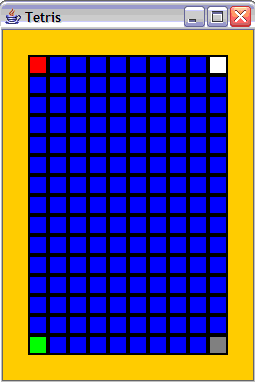

David Kosbie
Carnegie Mellon University
koz@cmu.edu
For our purposes, a "board" is a
2-dimensional list of color names (strings like "red"). Our goal
here is to allocate the board in the init function (init), and then to draw
the board in our draw functions (which will be called by redrawAll).
To help us
test our code, we will add a few lines in the init function (init) to pre-load
a few cells in the board with some colors. This code will be
removed after this step. In particular, we will paint the
top-left cell red, the top-right cell white, the bottom-left cell
green, and bottom-right cell gray.
Here is how our code should paint the board at this point:

Writing the playTetris() function:
We'll set up the dimensions for the game in a function playTetris(), which will
call run(width, height). playTetris() can then be called from the main body of the code.
We'll have the playTetris() function take no parameters. First, it
will set the rows and columns ("cols") to 15 and 10, respectively, and it will set
cellSize to be 20. It will then use these values to determine the window size so the board just
fits with the appropriate margins. Once the window
size is computed, playTetris() will call run() providing
the appropriate window size. Unfortunately, in the current
framework, we cannot also provide the rows and cols as extra parameters.
Thus, we have to separately set data.rows, data.cols, and data.cellSize in
our init function, as noted below.
Writing the init function:
With that, there are several tasks we need to do in the init
function.
First, we need to set data.rows, data.cols, data.margin, and data.cellSize
to the same values
that we used in our playTetris() function, as noted above.
Next, we need to
allocate our board as a 2-dimensional list of names of colors, and fill
it with our emptyColor ("blue"), as all cells are empty to start the
game. We also need to store this board, and the emptyColor, in the
data object (data.board, data.emptyColor).
Finally, we add the temporary code to pre-load the 4 corner cells
with colors for testing purposes:
# pre-load a few cells with known colors for testing purposes
data.board[0][0] = "red" # top-left is red
data.board[0][data.cols-1] = "white" # top-right is white
data.board[data.rows-1][0] = "green" # bottom-left is green
data.board[data.rows-1][data.cols-1] = "gray" # bottom-right is gray
Writing the draw functions:
Our main draw function, redrawAll(canvas, data),
will draw the background of the entire game (orange in the picture
above), then it will use top-down design and call a new function,
drawBoard, to draw the board.
To
draw the board in the drawBoard function, we simply iterate over every
cell (with two variables running over every row and column), and
repeatedly call the drawCell function, which takes 4 parameters: the
canvas, the data, the row of the cell, and the col of the cell.
Finally,
the drawCell function must draw the given cell using the color stored
in the board list corresponding to that cell (that is,
in board[row][col]). We'll draw the cell with a rectangle in the cell's color and an extra-large outline.
|
|
David Kosbie |